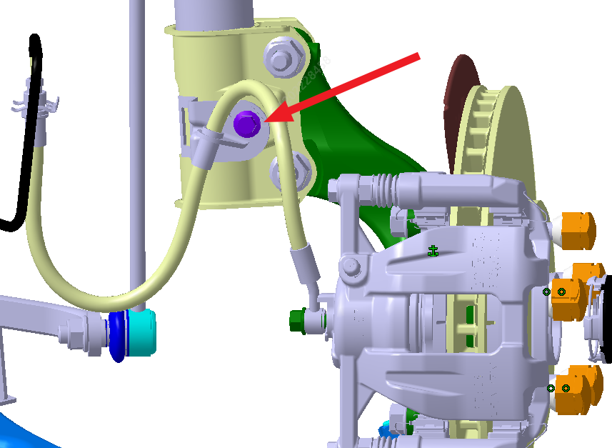
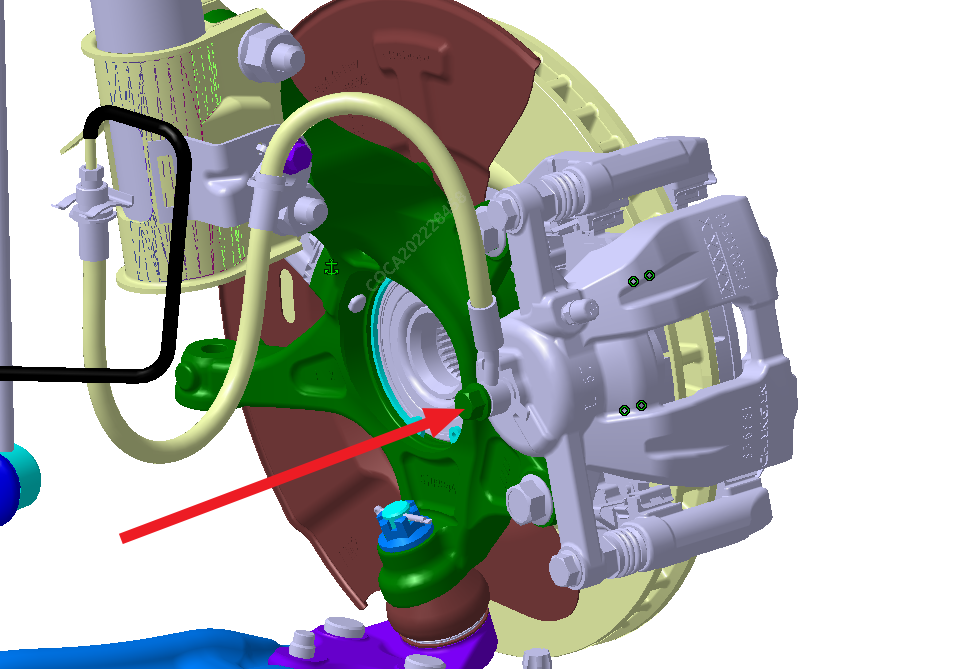
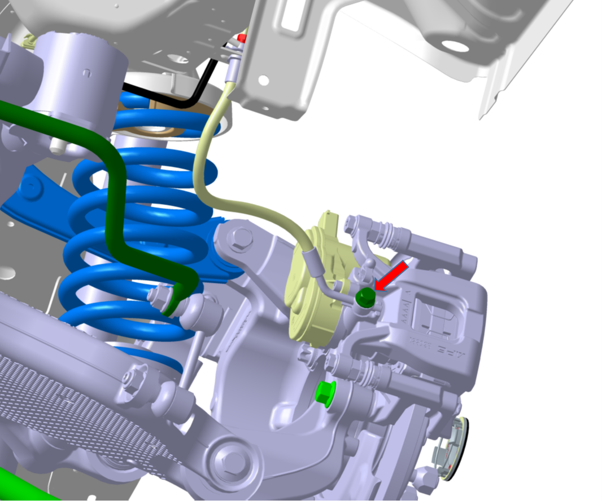
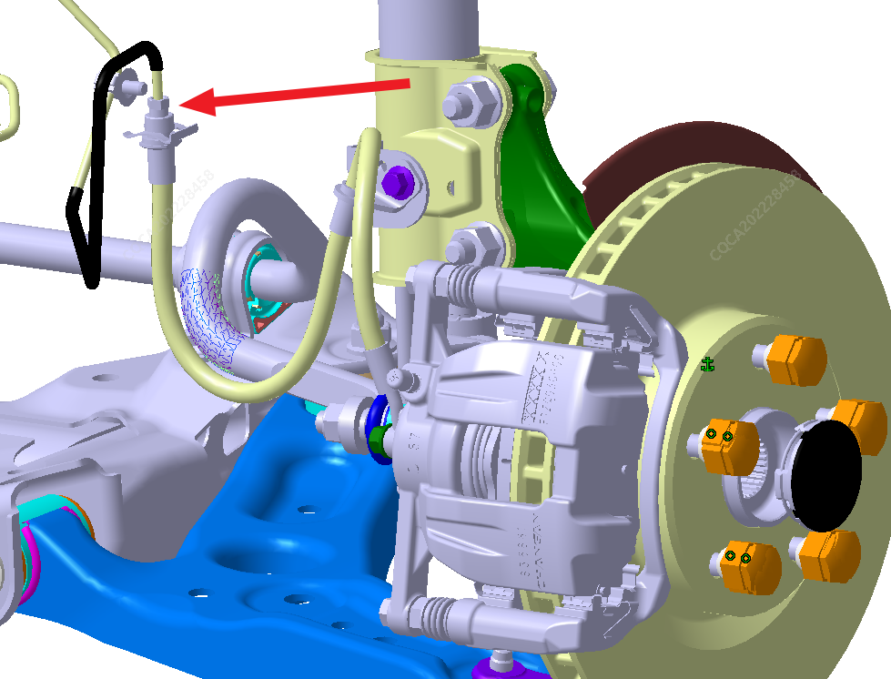
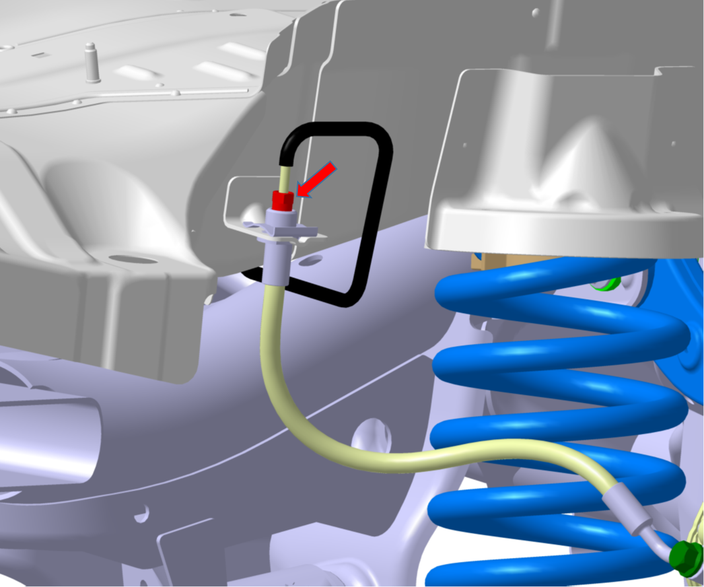
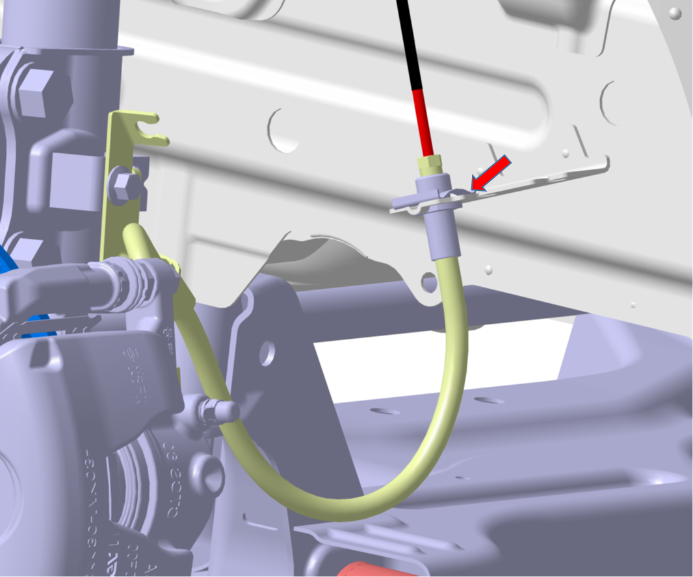
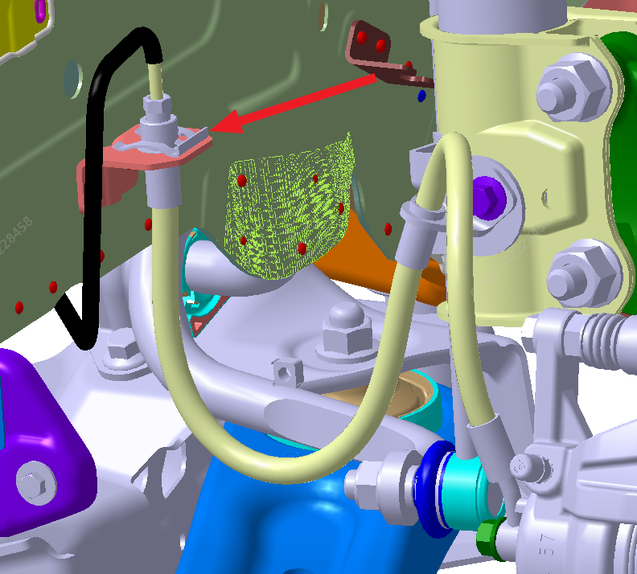
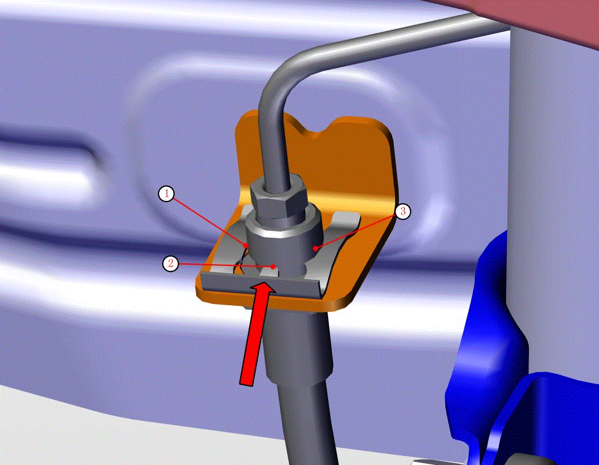

Снятие
Поднять автомобиль на необходимую высоту, см.: Подъем
Выкрутить шестигранный болт с фланцем, соединяющий тормозной шланг с Узел переднего поворотного кулака, инструмент: шестигранная торцевая головка M10, момент затяжки: (23 ± 2) N.m. (Только для демонтажа и монтажа переднего тормозного шланга, для заднего тормозного шланга этот шаг не выполняется).

Выкрутить болт и снять 2 медные прокладки, соединяющие тормозной шланг с тормозным суппортом, инструмент: шестигранная торцевая головка M13, момент затяжки: (30 ± 2) N.m.
Передний тормозной шланг показан на рисунке ниже:

Задний тормозной шланг показан на рисунке ниже:

Разъединить штуцеры жесткой и гибкой тормозных труб, инструмент: рожковый гаечный ключ M10, момент затяжки: (16 ± 2) N.m.
Передний тормозной шланг показан на рисунке ниже:

Задний тормозной шланг показан на рисунке ниже:

Снять E-образный пружинный фиксатор, после чего демонтаж тормозного шланга завершен, инструмент: плоская отвертка.
Передний тормозной шланг показан на рисунке ниже:

Задний тормозной шланг показан на рисунке ниже:

Сборка
Соединить средний кронштейн тормозного шланга с передней стойкой с помощью шестигранного болта с фланцем и затянуть с помощью шестигранной торцевой головки M10, момент затяжки: (23 ± 2) N.m. (Только для демонтажа и монтажа переднего тормозного шланга, для заднего тормозного шланга этот шаг не выполняется).
Подсоединить тормозной шланг к тормозному суппорту, используя ранее демонтированный болт и новые медные прокладки, и затянуть с помощью Динамометрический ключ, инструмент: шестигранная торцевая головка M13, момент затяжки: (30 ± 2) N.m.
Вставить штуцер тормозного шланга на стороне соединения с жесткой трубкой в отверстие кронштейна кузова так, чтобы его верхняя поверхность плотно прилегала к нижней поверхности кронштейна кузова, затем установить E-образный пружинный фиксатор (как показано на рисунке, три точки ①, ② и ③ E-образного фиксатора должны войти в пазы тормозного шланга), в завершение аккуратно забить E-образный фиксатор до упора с помощью молотка в направлении стрелки на рисунке.

Совместить и затянуть штуцер жесткой тормозной трубы со штуцером тормозного шланга, инструмент: рожковый гаечный ключ M10, момент затяжки: (16 ± 2) N.m.
Выполнить удаление воздуха из тормозной системы, см.: Удаление воздуха из тормозной системы